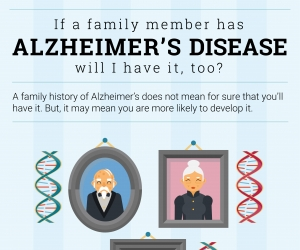

Things you can do
1. If you suspect you have Alzheimer's, consult your doctor as soon as possible
2. If you want to talk to someone about your situation, consider a therapist or a mental health hotline
3. Donate to a reputable charity
4. If you are a caretaker, you're doing a good thing. You aren't alone.
5. It's not your fault for having Alzheimer's, so please don't be ashamed of it.

